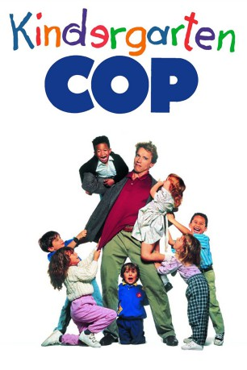
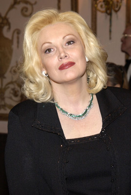
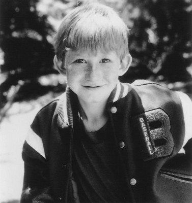

#3463 Kindergarten Cop
 
 IMDB-Wertung: 6.0 / 10
IMDB-Wertung: 6.0 / 10  Metascore: 0
Metascore: 0 
Der Polizist John Kimble kann nach langer Zeit endlich den gefährlichen Drogendealer Cullen Crisp dingfest machen. Wichtigste Zeugin im Prozess gegen den Verbrecher ist dessen Ex-Frau Rachel, die mit ihrem Sohn Cullen jr. aber schon vor Jahren geflohen ist. Die Spur führt in einen Kindergarten, in den sich Kimble als verdeckt ermittelnder Kindergärtner einschleust. Schnell muss er feststellen, dass ihm die Vorschulkinder mehr abverlangen als mancher Schwerverbrecher. Aber als geschulter Polizist weiß Kimble, wie man sich Respekt verschafft. Während er versucht Crisps Ex-Frau und deren Sohn aufzuspüren, kümmert er sich um die Ordnung im Kindergarten. Seine kleinen Schützlinge sollen schließlich etwas fürs Leben lernen.
Jahr: 1990
Dauer: 111 Minuten
FSK: 12
Land: USA Studio: Universal PicturesTonspuren:
Untertitel:
Auflösung: 1080p (1920x1040) Größe: 8130 MB
Genre: Action, Komödie, Krimi
Regisseur: Ivan Reitman
Drehbuch: Emilio Estevez
Soundtrack:
Darsteller:
 Arnold Schwarzenegger als Detective John Kimble
Arnold Schwarzenegger als Detective John Kimble Penelope Ann Miller als Joyce Palmieri / Rachel Crisp
Penelope Ann Miller als Joyce Palmieri / Rachel Crisp Pamela Reed als Detective Phoebe O'Hara
Pamela Reed als Detective Phoebe O'Hara Linda Hunt als Miss Schlowski
Linda Hunt als Miss Schlowski Richard Tyson als Cullen Crisp, Sr.
Richard Tyson als Cullen Crisp, Sr. Carroll Baker als Eleanor Crisp
Carroll Baker als Eleanor Crisp-  Cathy Moriarty als Sylvester's Mother
- Park Overall als Samantha's Mother
- Jayne Brook als Zach's Mother
 Richard Portnow als Captain Salazar
Richard Portnow als Captain Salazar- Alix Koromzay als Cindy
 Tom Dugan als Crisp's Lawyer
Tom Dugan als Crisp's Lawyer Jason Stuart als Salon Male Hairstylist
Jason Stuart als Salon Male Hairstylist- Kim Delgado als Mall Guard #1
 Angela Bassett als Stewardess
Angela Bassett als Stewardess Chi Muoi Lo als Mitch, the Dope Dealer
Chi Muoi Lo als Mitch, the Dope Dealer- Charlie Holliday als Daryl
 Peter Mark Vasquez als Street Tough #1
Peter Mark Vasquez als Street Tough #1 Leo Lee als Street Tough #3
Leo Lee als Street Tough #3 Catherine Reitman als 3rd Grade Student
Catherine Reitman als 3rd Grade Student- Jason Reitman als Kissing Boy
- Sarah Rose Karr als Emma
 Miko Hughes als Joseph
Miko Hughes als Joseph-  Adam Wylie als Larry
- Ross Malinger als Harvey
 Odette Annable als Rosa
Odette Annable als Rosa Gary Rodriguez als Lawyer , uncredited
Gary Rodriguez als Lawyer , uncredited Thomas Rosales Jr. als Street Tough #4 , uncredited
Thomas Rosales Jr. als Street Tough #4 , uncredited- Joseph Cousins als Dominic Palmieri / Cullen Crisp, Jr.
- Christian Cousins als Dominic Palmieri / Cullen Crisp, Jr.
- Tom Kurlander als Danny
- Betty Lou Henson als Keisha's Mother
- Heidi Swedberg als Joshua's Mother
- Bob Nelson als Henry Shoop
- Molly Cleator als Assistant to Schlowski
- Eugene Elman als Judge Christopher L. Webb
- Susan Burns als Waitress
- Roma als Salon Manicurist
- Ray Glanzmann als Mall Guard #2
- Ed Crick als Mall Guard #3
- John Hammil als Zach's Father
 Steve Park als Assistant to Salazar
Steve Park als Assistant to Salazar- John Steinkamp als Toy Store Clerk
- Lee Forest als Pharmacist
- Judy Wix als Substitute Teacher
- Galen Yuen als Low Life #1
- Frankie Avina als Low Life #2
- Terry Golden als Low Life #3
- Lee Dupree als Low Life #4
 Michael Chapman als Firefighter
Michael Chapman als Firefighter
Datei: X:\2-Dilogie(G-M)\Kindergarten Cop\Kindergarten Cop (1990, FSK12, 1920x1040).mkv seit 10.04.2016
Festplatte: HD Collection-2(A-Z)-3(A-M)
 Alle Filme aus Gruppe '2-Dilogie(G-M)\Kindergarten Cop'
Alle Filme aus Gruppe '2-Dilogie(G-M)\Kindergarten Cop'